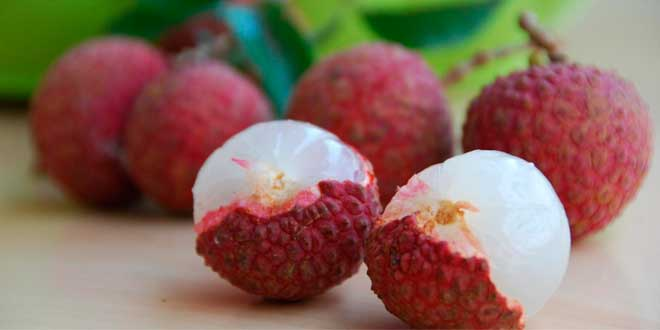

Welcome to Our Grammo Fol
Discover the finest Bangladeshi seasonal fruits:

Mango
আম
ম্যাঙ্গো, যা প্রশান্ত প্রদেশে আম বলা হয়, একটি সুস্বাদু ও পুষ্টিকর ফল। এই ফলটি বর্ষকালে আসে এবং সেই সময়টিতে এই ফলের স্বাদ অত্যন্ত স্বাদু ও রুচিকর। ম্যাঙ্গো বাঙালি জনগণের জনপ্রিয় ফলের মধ্যে একটি এবং এটির বেশ কিছু প্রকারের ভাঁড় পাওয়া যায়। আমের মধ্যে একটি মহৎ প্রকার হলো "লংডা" আম, যা আমাদের বৃষ্টির ঋতুতে প্রধানত উত্তর বাংলাদেশে পাওয়া যায়।
ম্যাঙ্গো ফলের মধ্যে সেরা স্বাদের একটি প্রকার হলো "আম্রপালি" আম, যা সেই সুস্বাদু ও জুসি ভাবে জানা হয়। এই আমের আরও কিছু প্রকার হলো "ফজলু", "লাঙডা", এবং "লাংরা" আম, যা সমৃদ্ধ স্বাদের হয়ে থাকে।
ম্যাঙ্গো একটি পুষ্টিকর ফল হিসেবে পরিচিত, এবং এটি বিভিন্ন সংকরণে খাওয়া যায়, যেমন ফল খাবার, ম্যাঙ্গো আইসক্রিম, ম্যাঙ্গো চাটনি, এবং ম্যাঙ্গো ল্যাসি।
বাংলাদেশে ম্যাঙ্গো একটি প্রধান আগ্রহণ ফল হিসেবে পরিচিত, এবং এই ফলটি বাংলাদেশের সমৃদ্ধ ফলের একটি উদাহরণ। এটি গরম ঋতুতে সবচেয়ে সুস্বাদু ও প্রিয় ফলের মধ্যে একটি এবং সম্পুর্ণ দেশের মানুষের মধ্যে বিশেষ গুরুত্বপূর্ণ হয়।

Lychees
লিচু
লিচু, এটি একটি মিষ্টি ও স্বাদু ফল, যা প্রধানত গরম দেশেগুলিতে উত্পন্ন হয়। এই ফলটি প্রধানত গুজরাত, মহারাষ্ট্র, বাংলাদেশ, থাইল্যান্ড, ইনডোনেশিয়া, ফিলিপাইন, চীন, ব্রাজিল, ও মেক্সিকো সহ অনেক দেশে উত্পন্ন হয়।
লিচু একটি ছোট গোল ফল, যা আকারে আমের মত, কিন্তু তা সবচেয়ে বেশী আকারে আমের মত ফজলুতে সাধারণ। এই ফলটি প্রধানত গুজরাত, মহারাষ্ট্র, বাংলাদেশ, থাইল্যান্ড, ইনডোনেশিয়া, ফিলিপাইন, চীন, ব্রাজিল, ও মেক্সিকো সহ অনেক দেশে উত্পন্ন হয়।
লিচু মুখে নেওয়া সময় এটি সবচেয়ে স্বাদু এবং মধুর আরওমেয়ে হয়, এবং এটি ঠান্ডা থাকার সময় মুখে আনন্দ তৈরি করে। লিচু বিভিন্ন সংকরণে খাওয়া যায়, যেমন ফল খাবার, লিচু শেক, লিচু চাটনি, এবং লিচু জেলি।
লিচু মুখে নেওয়া সময় এটি সবচেয়ে স্বাদু এবং মধুর আরওমেয়ে হয়, এবং এটি ঠান্ডা থাকার সময় মুখে আনন্দ তৈরি করে। লিচু বিভিন্ন সংকরণে খাওয়া যায়, যেমন ফল খাবার, লিচু শেক, লিচু চাটনি, এবং লিচু জেলি।

Pineapples
আনারস
আনারস বা পাইনআপল বৃক্ষের ফল একটি স্বাদু ও রুচিশীল ফল। এটি একটি বড় গাছে উত্পন্ন হয় এবং এটি পৃথিবীর বিভিন্ন অংশে চড়মিষ্যাদি বন্যজন্তুদের দ্বারা খুব পছন্দ করা হয়। আনারস একটি বৃহৎ, মেদের এবং সাদা রঙের ফল, যা স্বাদে মিষ্টি এবং রসপূর্ণ থাকে। এটি সবচেয়ে বেশীকারী খাবারের একটি উপাদান হওয়ার সাথে, আনারসে কিছু চিকিৎসাসহক গুণও থাকে। এটি সাধারণভাবে তাজা খাবার, জুস, চাটনি, মিল্কশেক, ফ্রোজেন ডেসার্ট, স্যুপ, চকলেট, চিপস, জেলি, পাই, ব্রেড, কেক, পিজা, পাস্তা, চকলেট বার, বিস্কুট, চকলেট চিপ কুকিজ, চকলেট কেক, আইসক্রিম, সোডা, চকলেট মিল্কশেক, ফল চিনি, প্যানকেক, পুডিং, স্যান্ডউইচ, চকলেট সিরো, আইসক্রিম স্যান্ডউইচ, চকলেট স্যালাড, পাইনআপল পারফেট, বোল্ড এবং আইসক্রিম সুন্ডে। আনারস ফলটি সুস্বাদু, পুষ্টিকর এবং ব্যাক্তিগত স্বাস্থ্যে একটি অত্যন্ত ভাল ফল।